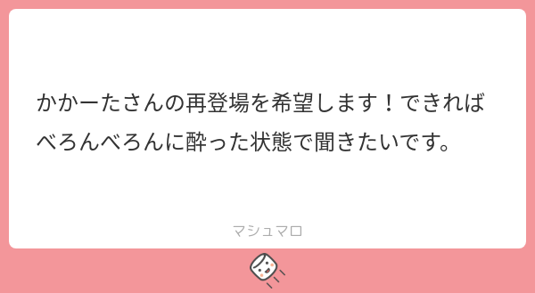
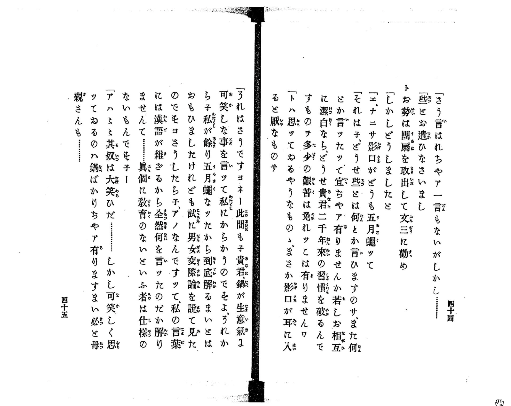

58:
Starring

Show notes
目次
おたより

かかーたさんの再登場を希望します！できればべろんべろんに酔った状態で聞きたいです。
https://marshmallow-qa.com/messages/9cf7f6c1-6941-41d0-a42d-7826cc9c304b
- マクドナルド「チキンクリスプ」が「マックチキン」になっていよいよ発売！ - グルメ Watch
チキンクリスプがマックチキンに改名したけど前あったのはこれじゃないです。
まちかねこ調査隊という活動が楽しそうだなと思って聞いていました。当時の思い出エピソードを聞いてみたいと思いました。現役で活動している方の報告や対談も聞いてみたいです。でもOBとしてあまり口は出さないとも言っていたので難しいですかね。 まちかネコ回に登場された方の博士課程のお話は面白かったです。苦労されたようですが博士課程に興味ある人にはとても有益そうだなって思いました。物理専攻の博士課程学生の生活ってどんなのなのかもっと知りたいです。
昨晩は今年度最後のオンラインミーティングが行われました🐈
4月からオンライン新歓なども企画しておりますので詳細が気になる方はぜひメールやTwitter DMにご連絡ください！
↓中の人が撮ったラオウちゃんの動画です とてとて歩いてる姿がとても可愛らしいですね❣️ pic.twitter.com/o40E8O0zOs— まちかねこ調査隊 (@s_machikaneko) March 26, 2022
- たりすけさんからのおたより
47: Out of Contextききました。 最近、くずし字勉強はじめたので、話題に出てびっくりしました。 「ぼっち・ざ・ろっく」見てみました。すごく面白いですね。 次回も楽しみにしています Submitted 07:53 AM - 22 February 2023 (UTC)
古典力学における時間反転について調べていて、図書館で発見した昭和6年の書物。同じ日本語とは思えない… pic.twitter.com/7JLSqOfoFH
— Haruki Watanabe (@haruki_wtnb) January 6, 2024

新編浮雲 第１編 - NDL Digital Collections
- Interaxion 22: First Japanese on Phys. Rev.
国立国会図書館デジタルコレクションを活用した回 - 漱石の当て字にはどんなものがありますか - ことばの疑問 - ことば研究館
こんにちは、いつも楽しく拝聴しております。物理については高校レベルの全くの専門外なので雰囲気で聞いていますが、流れの中でokaさんやゲストさんから鋭い視点の質問があるとやはり博士持ちの人はすごいなあと思っております。今回はAmazonミュージックでの配信についてご検討いただけないかお便りいたしました。あらBfmさんやresearchatfmさんなどがAmazonミュージックでの配信もしていて、速度調節がiOSのPodcastアプリより細かくできて個人的に便利だと感じています。AmazonミュージックからPodcastに興味を持つ方もいるかもしれませんので、この機会始めてみるのはいかがでしょうか。これからも楽しみにしております。 Submitted 10:02 AM - 13 March 2022 (UTC)
-
Interaxion - 物理系ポッドキャスト Podcast on Amazon Music
2年近くお待たせしましたが配信開始しました - 博士人材データベース（JGRAD）
- 【博士なちょこっと情報】登録者２万人超え！？博士人材向け大規模SNS”SDSG”に登録してみた！【博士号もちアラサー主婦の独り言。】｜Dr. りけ子（Tsugumi）
こんだけ博士を買い被ってくれる人達を日本社会に増殖させていこうな…。 https://t.co/kAhYTRx7hf
— かかーたさん🙇 a.k.a 屑奴@ハクシノカクレガ (@Kuzz_pontie_Kak) January 5, 2024
1:09:41 Advent Calendar 2023
天体観測
- みんなの図書室 ほんむすび
- 12/03 星について書きます。｜かかーたさん🙇a.k.a屑奴@ハクシノカクレガ
- スコープテック ラプトル60
- コルキット スピカ 天体望遠鏡工作キット
- NEWTONY
- ポルタIIR おかが使用している反射式望遠鏡
- 角川武蔵野ミュージアム
NHK紅白歌合戦、YOASOBIさんの「夜に駆ける」を当館の本棚劇場からお送りしました！
本棚劇場は高さ8mの巨大本棚に3万冊の本が並び、本棚にはプロジェクションマッピングを行っています。
今回は楽曲とともに、一夜限りのスペシャル映像をお届けしました。#NHK紅白 #YOASOBI #角川武蔵野ミュージアム pic.twitter.com/DEfYC6GlVZ— 角川武蔵野ミュージアム (@Kadokawa_Museum) December 31, 2020
地域コミュニティ
0νbbってことで6/6にやりますか！
— oka ఒక (@nowohyeah) October 16, 2023
二重ベータの日を一緒にやってくれる人募集！
1:45:32 アメフト
- 12/02 アメフトについて書きます。｜かかーたさん🙇a.k.a屑奴@ハクシノカクレガ
- 【ハイライト】2023年12月16日【関西学生Div.1-2入替戦】甲南大学vs大阪大学
- タージン - Wikipedia
2:20:38 西成の商店街の話
万博と瀬戸内国際芸術祭
- トムナフーリ - アート・建築をみる - ベネッセアートサイト直島
- 20. Seen/unseen Known/unknown - Researchat.fm
- 豊島美術館 - アート・建築をみる - ベネッセアートサイト直島
- いつもと違う世界を見た、という話 (一年振り返りZENタイルその2)｜かかーたさん🙇a.k.a屑奴@ハクシノカクレガ
思い出ガジェット
- これなんで盛り上がんなかったんだろうね大賞｜かかーたさん🙇a.k.a屑奴@ハクシノカクレガ
- ポーケン - Wikipedia
- rabbit — home
- NetWalkerポータル：シャープ
- VAIO type P
- VAIO P復活!? リファービッシュPCと周辺デバイスで「VAIO第2章」スタート：スクープ！ - ITmedia PC USER
- Eee PC - Wikipedia
- キングジム ポメラ DM250
お知らせ
- 出演して頂ける方や感想などをお待ちしております！ #interaxion
おたよりコーナーを作りました。質問、感想、要望などお待ちしております。https://t.co/rz0mlRKZU3
— Interaxion Podcast (@interaxion) January 12, 2021